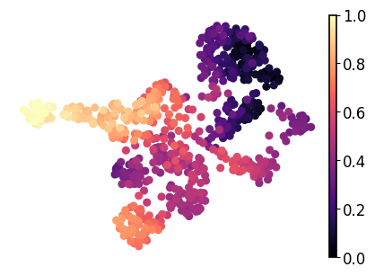
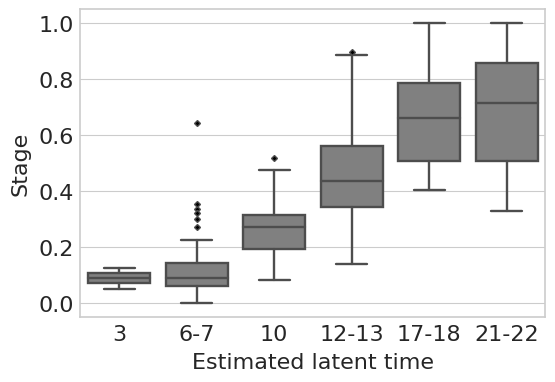

RegVelo-based analyis of zebrafish data#
Notebook runs RegVelo on zebrafish dataset.
Library imports#
import numpy as np
import pandas as pd
import scipy
import torch
import matplotlib.pyplot as plt
import mplscience
import seaborn as sns
import cellrank as cr
import scanpy as sc
import scvi
from regvelo import REGVELOVI
from rgv_tools import DATA_DIR, FIG_DIR
from rgv_tools.benchmarking import set_output
/home/icb/weixu.wang/miniconda3/envs/dynamo/lib/python3.10/site-packages/anndata/utils.py:429: FutureWarning: Importing read_csv from `anndata` is deprecated. Import anndata.io.read_csv instead.
warnings.warn(msg, FutureWarning)
/home/icb/weixu.wang/miniconda3/envs/dynamo/lib/python3.10/site-packages/anndata/utils.py:429: FutureWarning: Importing read_text from `anndata` is deprecated. Import anndata.io.read_text instead.
warnings.warn(msg, FutureWarning)
/home/icb/weixu.wang/miniconda3/envs/dynamo/lib/python3.10/site-packages/anndata/utils.py:429: FutureWarning: Importing read_excel from `anndata` is deprecated. Import anndata.io.read_excel instead.
warnings.warn(msg, FutureWarning)
/home/icb/weixu.wang/miniconda3/envs/dynamo/lib/python3.10/site-packages/anndata/utils.py:429: FutureWarning: Importing read_mtx from `anndata` is deprecated. Import anndata.io.read_mtx instead.
warnings.warn(msg, FutureWarning)
/home/icb/weixu.wang/miniconda3/envs/dynamo/lib/python3.10/site-packages/anndata/utils.py:429: FutureWarning: Importing read_loom from `anndata` is deprecated. Import anndata.io.read_loom instead.
warnings.warn(msg, FutureWarning)
/home/icb/weixu.wang/miniconda3/envs/dynamo/lib/python3.10/site-packages/anndata/utils.py:429: FutureWarning: Importing read_hdf from `anndata` is deprecated. Import anndata.io.read_hdf instead.
warnings.warn(msg, FutureWarning)
/home/icb/weixu.wang/miniconda3/envs/dynamo/lib/python3.10/site-packages/anndata/utils.py:429: FutureWarning: Importing read_umi_tools from `anndata` is deprecated. Import anndata.io.read_umi_tools instead.
warnings.warn(msg, FutureWarning)
General settings#
scvi.settings.seed = 0
[rank: 0] Seed set to 0
Constants#
DATASET = "zebrafish"
SAVE_DATA = True
if SAVE_DATA:
(DATA_DIR / DATASET / "processed").mkdir(parents=True, exist_ok=True)
SAVE_FIGURES = False
if SAVE_FIGURES:
(FIG_DIR / DATASET).mkdir(parents=True, exist_ok=True)
TERMINAL_STATES = [
"mNC_head_mesenchymal",
"mNC_arch2",
"mNC_hox34",
"Pigment",
]
Function definitions#
def min_max_scaling(data):
"""Compute min and max values for each feature."""
min_vals = np.min(data, axis=0)
max_vals = np.max(data, axis=0)
# Perform min-max scaling
scaled_data = (data - min_vals) / (max_vals - min_vals)
return scaled_data
Data loading#
adata = sc.read_h5ad(DATA_DIR / DATASET / "processed" / "adata_preprocessed.h5ad")
Velocity pipeline#
# Prepare skeleton
W = adata.uns["skeleton"].copy()
W = torch.tensor(np.array(W)).int()
# Prepare TF
TF = adata.var_names[adata.var["TF"]]
# Prepare model
REGVELOVI.setup_anndata(adata, spliced_layer="Ms", unspliced_layer="Mu")
vae = REGVELOVI(adata, W=W.T, regulators=TF, soft_constraint=False)
vae.train()
/home/icb/weixu.wang/miniconda3/envs/dynamo/lib/python3.10/site-packages/lightning/fabric/plugins/environments/slurm.py:204: The `srun` command is available on your system but is not used. HINT: If your intention is to run Lightning on SLURM, prepend your python command with `srun` like so: srun python /home/icb/weixu.wang/miniconda3/envs/dynamo/lib/pyth ...
/home/icb/weixu.wang/miniconda3/envs/dynamo/lib/python3.10/site-packages/lightning/fabric/plugins/environments/slurm.py:204: The `srun` command is available on your system but is not used. HINT: If your intention is to run Lightning on SLURM, prepend your python command with `srun` like so: srun python /home/icb/weixu.wang/miniconda3/envs/dynamo/lib/pyth ...
GPU available: True (cuda), used: True
TPU available: False, using: 0 TPU cores
HPU available: False, using: 0 HPUs
/home/icb/weixu.wang/miniconda3/envs/dynamo/lib/python3.10/site-packages/lightning/fabric/plugins/environments/slurm.py:204: The `srun` command is available on your system but is not used. HINT: If your intention is to run Lightning on SLURM, prepend your python command with `srun` like so: srun python /home/icb/weixu.wang/miniconda3/envs/dynamo/lib/pyth ...
You are using a CUDA device ('NVIDIA A100 80GB PCIe') that has Tensor Cores. To properly utilize them, you should set `torch.set_float32_matmul_precision('medium' | 'high')` which will trade-off precision for performance. For more details, read https://pytorch.org/docs/stable/generated/torch.set_float32_matmul_precision.html#torch.set_float32_matmul_precision
LOCAL_RANK: 0 - CUDA_VISIBLE_DEVICES: [0]
/home/icb/weixu.wang/miniconda3/envs/dynamo/lib/python3.10/site-packages/lightning/pytorch/trainer/connectors/data_connector.py:424: The 'train_dataloader' does not have many workers which may be a bottleneck. Consider increasing the value of the `num_workers` argument` to `num_workers=5` in the `DataLoader` to improve performance.
/home/icb/weixu.wang/miniconda3/envs/dynamo/lib/python3.10/site-packages/lightning/pytorch/loops/fit_loop.py:298: The number of training batches (1) is smaller than the logging interval Trainer(log_every_n_steps=10). Set a lower value for log_every_n_steps if you want to see logs for the training epoch.
/home/icb/weixu.wang/miniconda3/envs/dynamo/lib/python3.10/site-packages/lightning/pytorch/trainer/connectors/data_connector.py:424: The 'val_dataloader' does not have many workers which may be a bottleneck. Consider increasing the value of the `num_workers` argument` to `num_workers=5` in the `DataLoader` to improve performance.
Monitored metric elbo_validation did not improve in the last 45 records. Best score: -2350.604. Signaling Trainer to stop.
set_output(adata, vae, n_samples=30, batch_size=adata.n_obs)
Latent time analysis#
adata.obs["latent_time"] = min_max_scaling(adata.layers["fit_t"].mean(axis=1))
with mplscience.style_context():
fig, ax = plt.subplots(figsize=(5, 3.5))
sc.pl.umap(adata=adata, color="latent_time", title="", frameon=False, legend_fontsize=14, cmap="magma", ax=ax)
if SAVE_FIGURES:
fig.savefig(FIG_DIR / DATASET / "latent_time.svg", format="svg", transparent=True, bbox_inches="tight")

df = pd.DataFrame({"stage": adata.obs["stage"].tolist(), "latent_time": adata.obs["latent_time"].tolist()})
adata.obs["stage_num"] = 0
adata.obs["stage_num"][adata.obs["stage"].isin(["3ss"])] = 3
adata.obs["stage_num"][adata.obs["stage"].isin(["6-7ss"])] = 6.5
adata.obs["stage_num"][adata.obs["stage"].isin(["10ss"])] = 10
adata.obs["stage_num"][adata.obs["stage"].isin(["12-13ss"])] = 12.5
adata.obs["stage_num"][adata.obs["stage"].isin(["17-18ss"])] = 17.5
adata.obs["stage_num"][adata.obs["stage"].isin(["21-22ss"])] = 21.5
scipy.stats.spearmanr(adata.obs["stage_num"].tolist(), adata.obs["latent_time"].tolist())
SignificanceResult(statistic=0.7986219557089823, pvalue=2.0602518323614564e-155)
loc = [0, 1, 2, 3, 4, 5]
label = ["3", "6-7", "10", "12-13", "17-18", "21-22"]
with mplscience.style_context():
sns.set_style(style="whitegrid")
fig, ax = plt.subplots(figsize=(6, 4))
order = ["3ss", "6-7ss", "10ss", "12-13ss", "17-18ss", "21-22ss"]
flierprops = {"marker": "D", "markerfacecolor": "black", "markersize": 3, "linestyle": "none"}
sns.boxplot(data=df, x="stage", y="latent_time", order=order, color="grey", ax=ax, flierprops=flierprops)
# Set labels and title
plt.ylabel("Stage", fontsize=16)
plt.xlabel("Estimated latent time", fontsize=16)
plt.xticks(ticks=loc, labels=label) # Replace ticks with new labels
plt.xticks(fontsize=16)
plt.yticks(fontsize=16)
plt.show()
if SAVE_FIGURES:
fig.savefig(FIG_DIR / DATASET / "latent_time_boxplot.svg", format="svg", transparent=True, bbox_inches="tight")
plt.show()

CellRank pipeline#
vk = cr.kernels.VelocityKernel(adata)
vk.compute_transition_matrix()
ck = cr.kernels.ConnectivityKernel(adata).compute_transition_matrix()
kernel = 0.8 * vk + 0.2 * ck
estimator = cr.estimators.GPCCA(kernel)
estimator.compute_macrostates(n_states=8, n_cells=30, cluster_key="cell_type")
estimator.set_terminal_states(TERMINAL_STATES)
WARNING: Unable to import `petsc4py` or `slepc4py`. Using `method='brandts'`
WARNING: For `method='brandts'`, dense matrix is required. Densifying
GPCCA[kernel=(0.8 * VelocityKernel[n=697] + 0.2 * ConnectivityKernel[n=697]), initial_states=None, terminal_states=['Pigment', 'mNC_arch2', 'mNC_head_mesenchymal', 'mNC_hox34']]
estimator.plot_macrostates(which="terminal", basis="umap", legend_loc="right", s=100)
/home/icb/weixu.wang/miniconda3/envs/dynamo/lib/python3.10/site-packages/scvelo/plotting/scatter.py:656: UserWarning: No data for colormapping provided via 'c'. Parameters 'cmap' will be ignored
smp = ax.scatter(
/home/icb/weixu.wang/miniconda3/envs/dynamo/lib/python3.10/site-packages/scvelo/plotting/scatter.py:694: UserWarning: No data for colormapping provided via 'c'. Parameters 'cmap' will be ignored
ax.scatter(
/home/icb/weixu.wang/miniconda3/envs/dynamo/lib/python3.10/site-packages/scvelo/plotting/utils.py:1391: UserWarning: No data for colormapping provided via 'c'. Parameters 'cmap' will be ignored
ax.scatter(x, y, s=bg_size, marker=".", c=bg_color, zorder=zord - 2, **kwargs)
/home/icb/weixu.wang/miniconda3/envs/dynamo/lib/python3.10/site-packages/scvelo/plotting/utils.py:1392: UserWarning: No data for colormapping provided via 'c'. Parameters 'cmap' will be ignored
ax.scatter(x, y, s=gp_size, marker=".", c=gp_color, zorder=zord - 1, **kwargs)
Save dataset#
if SAVE_DATA:
adata.write_h5ad(DATA_DIR / DATASET / "processed" / "adata_run_regvelo.h5ad")
vae.save(DATA_DIR / DATASET / "processed" / "rgv_model")